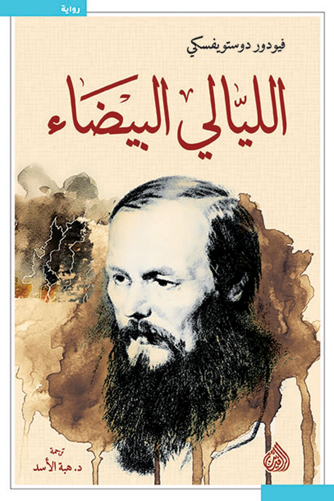
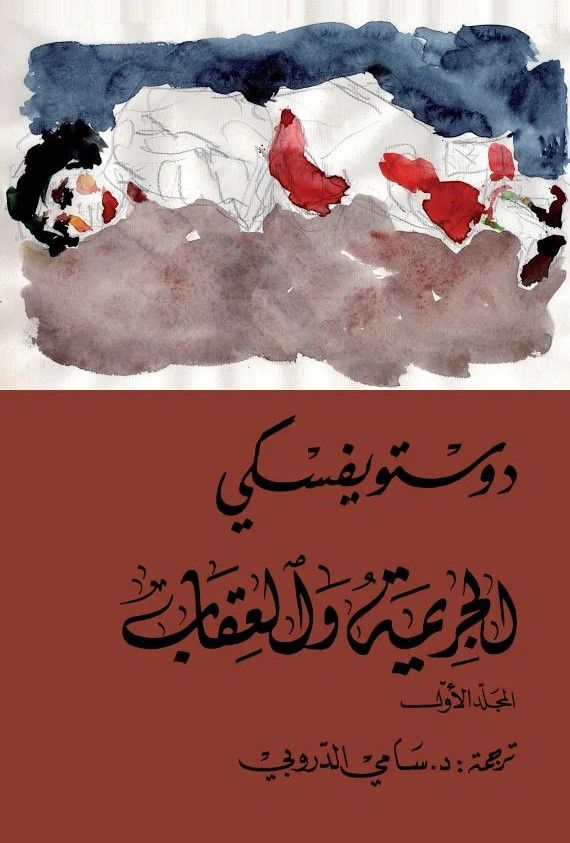
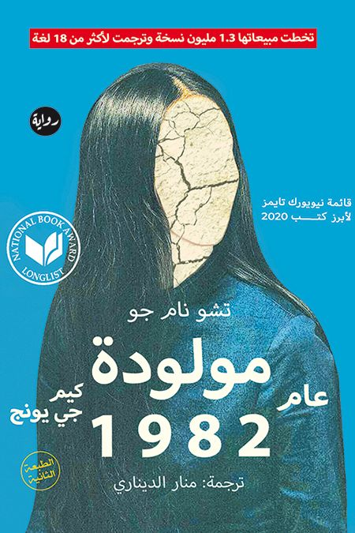

كتب الأدب
مرر المؤشر على غلاف الكتاب لقراءة نبذة سريعة عنه.

الليالي البيضاء
حكاية عاطفية غارقة في الشجن والمشاعر الملتبسة، يصور دويستوفسكي صراع الذات بين الحب والصداقة، ويحلل بدقة عذابات النفس الإنسانية بأسلوب مشوق وحرفي.

الجريمة والعقاب
تُركز الرواية على البعد النفسي وصراع الخير والشر، وتصور خواطر وأفكار المجرم أثناء ارتكابه الجريمة، بأسلوب دوستويفسكي العميق والدقيق.

كيم جي يونج-مولودة عام 1982
تحكي الرواية عن حياة كيم الهادئة مع أسرتها في سيول، وكيف تبدأ بتقمص شخصيات نساء أخريات، ويشرع زوجها في فهم سبب ذلك واكتشاف مفاجآت جديدة مع تقدم الأحداث.